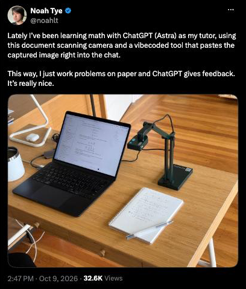
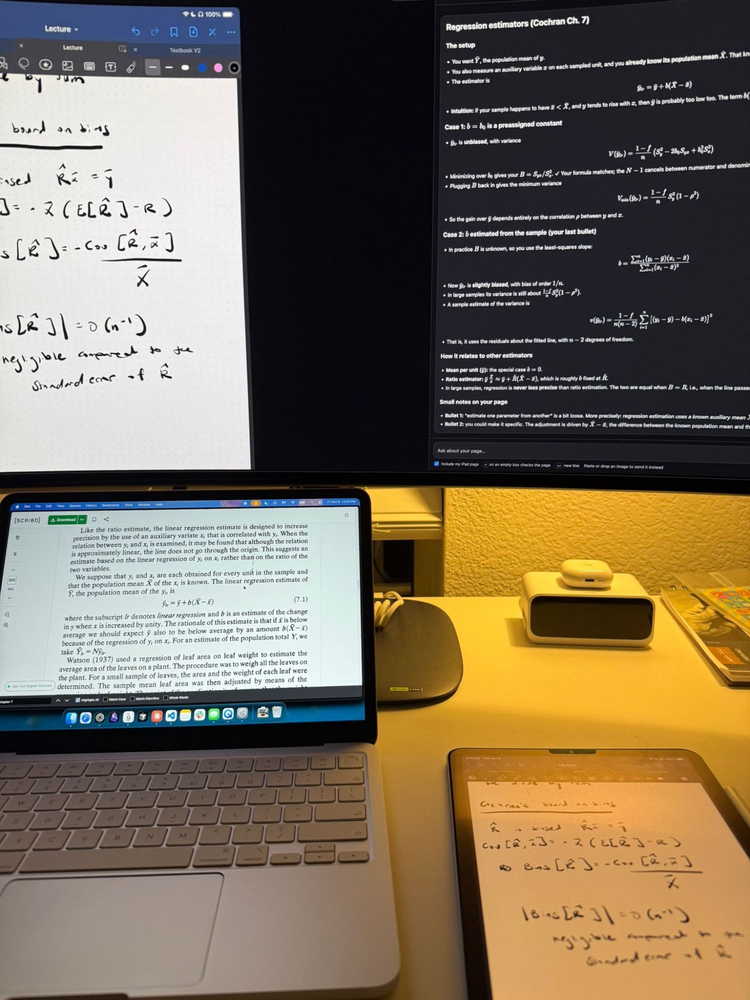

The process
I was scrolling through my timeline and saw this:

I took the idea and turned it into my own workflow for studying. I do all my math by hand in GoodNotes on my iPad, so my loop looked like this:
- Take notes or work a problem.
- Get stuck, then screenshot the page.
- Send the screenshot to Claude and type out my question.
- Go back to my notes and write down whatever Claude said.
This process was cumbersome. Every question I had meant leaving my notes and getting distracted by the multi-step process.
I built this small, quick tool to solve it! When I need to ask a question, the tool has a fresh capture of my page, so my process is seamless. The answer shows up on my Mac right next to my notes, and I copy what I need without leaving GoodNotes.
What it does
The iPad plugs into the Mac and mirrors through QuickTime. Math Reader is a small local web app with two halves:
- Left: a live view of my page, which is exactly what Claude sees.
- Right: a chat box. Every question I type is sent with a fresh capture of the page, so I can ask "is step 3 right?" or "why does this term cancel?" without screenshotting anything.
A few other ways to use it:
- Pressing Enter with an empty box checks the whole page.
- Auto-check waits until I pause writing, then checks the page by itself.
- New problem clears the conversation so old context doesn't pile up.
- I can also paste or drop in any image instead, like a textbook page.

